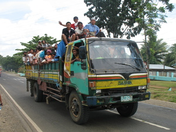

penù 
/pɔnuʔ/
v_rt.
“full”
vi.
for something, e.g., a container of water or a page of writing (egkapenù, nakapenù, someone, egkA><ø-) to become full (igkapenù, ingkapenù, reason, ig><ø-)
Kenè niyud e timuli ka keddiey ne egbabeen su egkapenù e ne kenè kud e egkeelehan.
Eng. full, become
Tigwanon: penuʔ
Sarangani: penuʔ
WBM: penuʔ
Ilianen: penuʔ
Tagbawa: penuʔ
Cotabato Manobo: penuʔ
Tasaday: penuʔ
Dibabawon: penu
Binukid: punuʔ
Kinamigin: punuʔ
Cagayano: pannuʔ
Proto: penuʔ
Online dict status: -
Usage level: F
adj.
(napenu-penù, nA-rdpRT-) fully
Napenu-penù e te hemey ka lelapeng ku.
My storage house was already fully a rice.
Eng. fully
Online dict status: -
Usage level: M
v.
(pakapenù, pAkA-) to be full; level with the top
Eng. full; level
Online dict status: -
Usage level: M
v.
for someone (eggipenù, inggipenù, miggipenù, agent, eg><ø-hi-) to fill something to make it full (eggipenuen, inggipenù, miggipenù/piggipenù, patient, eg><en-hi-)
Ka eggimu iyan ka egtimul te minsan nekey diyè te minsan nekey ne egtimparen wey eggipenuen.
Eggipenuen ku pad ka sakeru te weyig.
I will fill the gallon with water.
Eggipenuen din pad te kasilè ka liyang human eg-uli.
He/she will fill the basket with a sweet potato before going home.
Inggipenù din ka ubab din te keppi sikan naa ka kenad sikandin eg-abey.
He/she fill his/her cup of coffee full that is why he won't get again.
Eng. fill
Online dict status: -
Usage level: R
Updated by: RJH,AAA,QDL,QDL,TME,RJH,RAA
Last updated: 03/Mar/2018
"napenu" in healthbook "Naluwasan si Iwayan"
"hipenua" in song "Manama ne matulus"
"napenu" in song "Ul-ulahing ka keddi ne pusung"
"Hipenuen" in song "Keupianan te pegsalig ku"
This page last updated: 28-Dec-2019
Copyright © 2009-2014, Matigsalug Language Christian Association, Inc